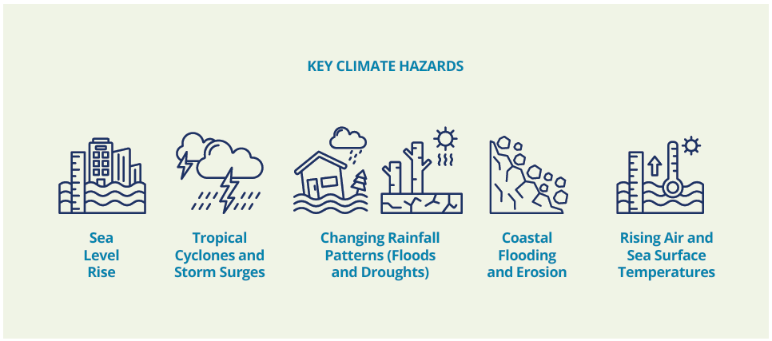
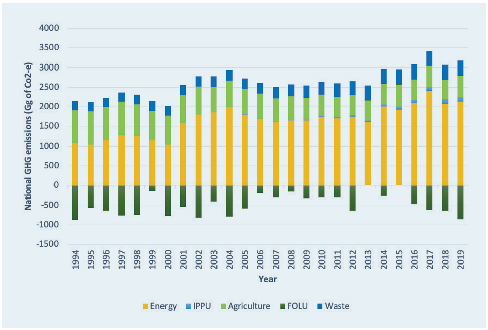
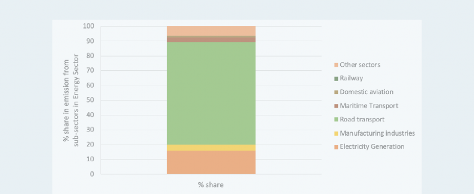

ACKNOWLEDGMENTS
The development of Fiji’s NDC3.0 was spearheaded by the Department of Climate Change (DoCC) of the Ministry of Environment and Climate Change (MECC), in close collaboration with the Global Green Growth Institute (GGGI) and with valued support from the NDC Partnership (NDCP) and inputs from the United Nations Economic Commission for Asia, the Pacific (ESCAP), the Food and Agriculture Organisation (FAO), and the International Institute for Sustainable Development (IISD).
Sincere appreciation is extended to all government ministries, sectoral experts, and members of the various The Working Groups (TWGs) whose dedicated efforts were crucial to this process. Additionally, the core technical team and primary authors sincerely thank the steering committees of the National Adaptation Plan (NAP) and the National Ocean Policy (NOP) for their valuable contributions and guidance. Special thanks are extended to all participants in the national and sub-national consultations, including representatives from diverse communities, civil society, academia, non-governmental organisations, and the private sector, whose insights were vital and significantly influenced Fiji’s NDC3.0.
PRODUCED BY
Ministry of Environment and Climate Change
PUBLISHED IN
October 2025
SUGGESTED CITATION:
Department of Climate Change, Ministry of Environment and Climate Change, Government of Fiji (2025). Fiji's Third Nationally Determined Contribution 2025-2035, Suva, Fiji.
PHOTO CREDITS
Cover image ©Shutterstock/Ethan+Daniels
Fiji’s Third Nationally Determined Contribution (NDC3.0)
October 2025
FOREWORD
Fiji’s Third Nationally Determined Contribution (NDC3.0) is our updated national climate action plan, submitted in keeping with our reporting obligations under the United Nations Framework Convention on Climate Change (UNFCCC) and the Paris Agreement. Fiji’s NDC3.0 reflects our nation’s continued commitment to addressing the climate crisis with urgency and ambition, and our ongoing resolve to build lasting resilience in the face of increasing threats to our way of life.
The Ministry of Environment and Climate Change has led the development of Fiji’s NDC3.0 and benefited from inter-governmental support, cross-sectoral expertise, as well as inputs and perspectives from a wide range of national stakeholders.
The process involved thorough consultations, TWGs meetings and workshops with Government officials, the private sector, community representatives, and civil society. This approach has ensured that our NDC is inclusive, nationally owned and reflects the collective aspirations of our people.
Despite Fiji’s current and historical GHG emissions constituting a negligible proportion of global emissions, our nation continues to face the full force of the impacts of climate change. As a result, Fiji’s NDC3.0 is required to account for and consider a range of climate impacts and risk scenarios alongside the requirement to define our strategy and commitment to reducing national GHG emissions. This revised action plan is a blueprint for building a sustainable and climate-resilient future for our communities.
It serves to articulate not only our commitments but our needs and expectations in relation to the assistance, financing, and technology transfer our nation requires to prosper and thrive in the face of a changing climate.
This year marks a significant milestone for the Government of Fiji and our people, as thirteen (13) out of seventeen (17) parts of the CCA 2021 entered into force in April 2025. The implementation of our ambitious national legislative framework for climate action provides a robust legal foundation for the implementation of our climate commitments. The CCA 2021 requires robust accountability and transparency, in the delivery of our commitments under the Paris Agreement and is binding to relevant Ministries to promote the achievement of any sectoral emissions reduction or limitation targets in Fiji’s NDC.
Since 2015, our national commitments under the Paris Agreement have evolved significantly. Fiji’s NDC3.0 sets ambitious targets for the energy sector, expands the overall sectoral coverage of our mitigation targets, includes greater depth and detail within our adaptation targets which have been enhanced to reflect a range of sectors and risks and further integrate nature-based solutions, and presents our national commitments for addressing climate- induced loss and damage. Each sectoral target reflects Fiji’s growing determination to enhance climate action, and align our national development pathway with what is required to limit global average temperature rise to below 1.5°C. Fiji calls on all Parties to ensure their respective NDCs are aligned with the contributions required to preserve the 1.5°C guardrail. Failure to do so will imperil the potential to minimise harm and undermine the actions and commitments made by climate vulnerable nations.
I wish to acknowledge the support from all the stakeholders who contributed to this national milestone. Together, we can transform ambition into action, and demonstrate that small island developing states (SIDS) like Fiji can lead by example.
Honorable Mosese Bulitavu
Minister for Environment and Climate Change
ACRONYMS
AF Adaptation Fund
AFOLU Agriculture, Forestry and Other Land Use
AMS Approved Methodologies for small-scale CDM project activities
AR5 IPCC Fifth Assessment Report
BAU Business As Usual
BTR Biennial Transparency Report
BUR Biennial Update Report
CBIT Capacity-Building Initiative for Transparency
CBT Climate Budget Tagging
CCA Climate Change Act
CIF Climate Investment Fund
CMA Conference of the Parties serving as the Meeting of the Parties to the Paris Agreement
COP/CP Conference of the Parties
CRESHCF Climate-Resilient and Environmentally Sustainable Health Care Facilities
CROC Climate Relocation of Communities
CRVAM Comprehensive Risk and Vulnerability Assessment and Mapping
CSA Climate-Smart Agriculture
CSPR Carbon Sequestration Property Rights
CVA Climate Vulnerability Assessment
DoCC Department of Climate Change
DRR Disaster Risk Reduction
EEZ Exclusive Economic Zone
EFL Energy Fiji Limited
EP Equivalent Population
ESSF Environmental and Social Safeguards Framework
ETF Enhanced Transparency Framework
EWMS Early Warning and Monitoring System
EWS Early Warning System
FCDCL Fiji Cooperative Dairy Company Limited
FJD Fijian Dollar
FOD First Order Decay
FOLU Forestry and Other Land Use
FRLD Fund for Responding to Loss and Damage
FTRD Fiji Taskforce on Relocation and Displacement
GCF Green Climate Fund
GDP Gross Domestic Product
GEDSI Gender Equality, Disability, and Social Inclusion
GEF Global Environment Facility
GGA Global Goal on Adaptation
GGGI Global Green Growth Institute
GHG Greenhouse Gas
GST Global Stocktake
GWP Global Warming Potential
ICAO International Civil Aviation Organization
ICAT Initiative for Climate Action Transparency
ICTU Information to Facilitate Clarity, Transparency, and Understanding
IMO International Maritime Organization
IPCC Intergovernmental Panel on Climate Change
IPPU Industrial Processes and Product Use
ISO International Organization for Standardisation
ITMO Internationally Transferred Mitigation Outcome
LEAP Low Emissions Analysis Platform
LEDS Low Emission Development Strategy
LPG Liquefied Petroleum Gas
MECC Ministry of Environment and Climate Change
MEPLS Minimum Energy Performance and Labelling Standards
MEPS Minimum Energy Performance Standards
MEPSL Minimum Energy Performance Standards for Appliances and Lighting
MIMS Ministry of Infrastructure and Meteorological Services
MONRE Ministry of Natural Resources and Environment
MPA Marine Protected Areas
MPWMT Ministry of Public Works, Meteorological Services and Transport
MRMDDM Ministry of Rural and Maritime Development and Disaster Management
MRV Measurement, Reporting, and Verification MSME Micro, Small and Medium Enterprise NAP National Adaptation Plan
NBC National Building Code
NC National Communication
SPREP Secretariat of the Pacific Regional Environment Program
NCCP National Climate Change Policy
TNA Technology Needs Assessment
NCD Non-Communicable Disease
TWG Technical Working Group
NCFS National Climate Finance Strategy
UN United Nations
NBSAP National Biodiversity Strategy and Action Plan
NSASP Non-Sugar Agriculture Sector Policy
NDC Nationally Determined Contribution NDMO National Disaster Management Office NDP National Development Plan
NELD Non-Economic Loss and Damage
NEP National Energy Policy
NEXSTEP National Expert SDG Tool for Energy Planning
NGO Non-Governmental Organisation
NIR National Inventory Report
NOP National Ocean Policy
PBCF Propeller Boss Cap Fins
PIFS Pacific Islands Forum Secretariat
PPP Purchasing Power Parity
PRF Pacific Resilience Facility
PV Photovoltaics
REDD+ Reducing Emissions from Deforestation and Forest Degradation
RPACA Regional Programmatic Approach to Climate Action
SCCF Special Climate Change Fund SDG Sustainable Development Goal SDP Strategic Development Plan SIDS Small Island Developing States
SOP Standard Operating Procedure
SPC Pacific Community (South Pacific Commission)
UNFCCC United Nations Framework Convention on Climate Change
USD United States Dollar
WWTP Wastewater Treatment Plant
Fiji submits this third Nationally Determined Contribution (NDC3.0) amid the worsening impacts of the climate crisis. Global efforts to reduce greenhouse-gas emissions remain critically insufficient in relation to the reductions required to meet the Paris Agreement's core objective of limiting warming to 1.5°C. For Fiji, a Small Island Developing State on the front lines of this crisis, the potential breach of this agreed and scientifically based guardrail presents an unpreceded threat to our national security. Current climate change projections for Fiji are clear that overshooting the 1. 5°C limit will lead to the dramatic intensification of localised climate impacts on our people, ecosystems, and economy.
Rising seas, intensifying cyclones, and changing climate patterns already compound Fiji's socioeconomic challenges, directly threatening communities, livelihoods, and human rights. This reality underpins the ‘Climate Emergency’ declared through the passage of Fiji’s CCA of 2021. It is in this context of acute vulnerability that we present our enhanced and expanded commitments under the Paris Agreement.
As a long-standing leader in global climate action-as the first nation to ratify the Paris Agreement, first SIDS to host the UNFCCC COP-Fiji recognises the moral imperative to champion greater international ambition. We welcome the recent advisory opinion of the International Court of Justice on the obligations of states with respect to climate change and call on all Parties to submit and implement NDCs that reflect their fair respective contribution to the global effort to preserve the 1.5°C limit and ensure compliance with the full common but differentiated responsibilities of all Parties under the UNFCCC and it’s Paris Agreement.
This NDC has been developed with the rigorous due diligence required to ensure its commitments are both ambitious and achievable. Our mitigation targets are informed by the First Global Stocktake, Fiji’s 2023 National Inventory Report, and the latest sectoral data, aligning our national action with both the requirements of the 1.5°C target and our standing commitment to achieve net-zero emissions by mid-century. Simultaneously, our adaptation and loss and damage objectives are grounded in the best available science, current climate trends, and localised multi-model scenarios, fulfilling the State’s duty to protect the rights and freedoms of all Fijians.
Through this submission for the 2025-2035 period, Fiji reaffirms its commitment to the Paris Agreement. We continue to strive for a future where all nations can pursue equitable, sustainable, and resilient low- emission development pathways that protect the most vulnerable, preserve our shared environmental heritage, and deliver climate justice.
Key features of Fiji’s revised national contribution to the requirements, objectives, and principles of the Paris Agreement for the 2025-2035 period include the following:
The incorporation of commitments for further institutionalising capacity and governance arrangements for long-term climate risk management: Fiji’s 2020 NDC included the commitment to enact national climate legislation and provide a legal framework for climate risk management in Fiji. In 2021, Fiji delivered against this commitment enacting CCA 2021. The CCA 2021 translates relevant elements of the Paris Agreement into national legislation and functions as the domestic legal basis for NDC implementation. Fiji’s NDC3.0, as submitted, not only serves to meet Fiji’s obligations under the UNFCCC and The Paris Agreement, but also as a means of compliance with national law. The NDC3.0 sets out further commitments aligned with the implementation of the CCA which serve to support institutional and systemic reforms required to enable the delivery of Fiji’s sectoral NDC commitments and targets and support Fiji’s long term climate change priorities.
Enhanced detail, scope and ambition of Fiji’s mitigation objectives and commitments: Fiji’s revised commitments include:
» The reaffirmation of Fiji’s standing commitment to achieving net zero annual emissions by 2050
» Enhancement of Fiji’s 2020 NDC objective to reduce energy sector emissions by 30% relative to the Business-as-Usual scenario (BAU) by 2030 with the revised objective to reduce energy sector emissions by 36% by 2035 and the articulation of the pathway to achieving this reduction through quantified energy sub-sector targets. (with the unconditional contribution to this target increasing from 10% to 12%).
» Reaffirmation of Fiji’s objective to achieve close to 100% of electricity (grid-connected) production from renewable sources by 2030 and expansion of our ambition to fully achieve 100% by 2035.
» Expanded sectoral scope of Fiji’s mitigation commitments through qualitative emissions reduction targets for Fiji’s waste, agriculture, and forestry sectors
» Inclusion of additional mitigation measures that contribute towards improving energy security, access, and equity have been prioritised in keeping with the approach and objectives of Fiji’s National Energy Policy 2020-2030.
» Introduction of commitments aimed and improving the long-term enabling environment for decarbonisation in Fiji - such as the commitment to review and amend key legislation and develop a detailed National Transport Decarbonisation Implementation Strategy.
Expanded scope, detail, and ambition of Fiji’s adaptation objectives and commitments:Inresponse to Fiji’s acute vulnerability and exposure to the escalating impacts of climate change and the use of the best available science to understand the nature and scale of future climate impacts, Fiji’s adaptation commitments have been significantly expanded and further detailed. Fiji’s revised commitments include:
» The presentation of prioritised adaptation commitments across seven key sectors: Agriculture and Food Security; Infrastructure Systems; Human Settlements; Health Systems; Disaster Risk Reduction; Biodiversity and Ecosystems; and Oceans.
» Treatment of targets and objectives expanded and designed to leverage cross-cutting objectives and sustainable development priorities through the targeting of systemic reforms, and targeted actions to protect communities and safeguard economic stability.
» Increased detail and scope of adaptation commitments including through the addition of metrics and indicators for monitoring progress and validating achievement.
» Adaptation commitments have been further designed to recognise and leverage mitigation co-benefits as well as utilise nature-based solutions.
» Alignment of Adaptation commitments with the SDG’s and Fiji’s SDG priorities.
» Alignment of Adaptation commitments with Fiji’s National Biodiversity Strategy and Action Plan and commitments made under the United Nations Convention on Biological Diversity
The introduction of loss and damage response commitments as the third pillar of Fiji’s climate change response: Fiji’s NDC3.0 introduces commitments to address climate-driven loss and damage response as a third commitment category. Fiji’s new loss and damage related NDC elements and commitments include:
» The articulation of Fiji’s approach to loss and damage response and presentation of Fiji’s contextualised national definition of loss and damage
» The communication of localised loss and damage trends experienced in Fiji and identification of associated climate change drivers (Annex 3).
» Prioritised commitments for building long term national institutional and financial capacity to address loss and damage alongside targeted loss and damage priorities and commitments for the 2025-2030 period.
The achievement of Fiji’s NDC3.0 targets and objectives is contingent upon access to new and additional financing. The conditional elements of Fiji’s 2035 mitigation target, as well as broader adaptation and loss & damage commitments illustrate Fiji’s significant reliance on access to increased climate finance, technology transfer, and capacity building to deliver this vision. To further clarify Fiji’s needs – four levels of conditionality have been used to illustrate the status of these commitments.
1.1 BACKGROUND
Fiji is an archipelago in the South Pacific consisting of 332 islands, with a total land area of 18,333 km² and an Exclusive Economic Zone of 1.3 million km² and is home to a population of 924,145 people.
Fiji is experiencing severe and widespread localised impacts of climate change and will face escalating and intensified impacts and threats over time.

KEY CLIMATE HAZARDS
Sea Level Rise
Tropical Cyclones and Storm Surges
Changing Rainfall Patterns (Floods and Droughts)
Coastal Flooding and Erosion
Rising Air and Sea Surface Temperatures
Fiji’s vulnerability to climate change stems from its heavy reliance on coastal resources, a concentration of population and infrastructure in low-lying coastal zones, and an economy reliant on climate-sensitive sectors like agriculture, tourism, and fisheries. Fiji's economy relies heavily on tourism, which accounts for approximately 40% of its Gross Domestic Product (GDP) and employs more than a third of the formal workforce. The national unemployment rate stands at 5.4%, with youth unemployment notably higher.1
Despite its economic progress, Fiji faces developmental challenges, including geographic isolation of outer islands, infrastructure gaps, and a need for continued investment in health and education. The nation’s economic stability and sustainable development prospects are critically and directly threatened by the adverse impacts of climate change, which pose an existential risk to its people, ecosystems, and economic base.
1.2 CLIMATE CHANGE IMPACTS IN FIJI
Climate Change is single greatest threat to our sustainable development, economic stability, and national security. Fiji’s dispersed geography, coastal-based population, and climate-sensitive economic sectors amplify and compound the challenges faced. Therefore, it is a national imperative that climate resilience is fully integrated into every level of policy, planning, and budgeting. Our national response must be proactive, not reactive; it must be holistic, addressing both acute disasters and slow-onset threats; and it must be just, ensuring that the most vulnerable communities are protected.
As a Small Island Developing State (SIDS), Fiji is highly exposed to rising sea levels, coastal erosion, changing rainfall patterns, and intensified hydrometeorological events (cyclones, extreme rainfall events, prolonged droughts) which threaten ecosystems, infrastructure, food security, and human health (IPCC, 2022; Fiji Meteorological Service, 2023). Key climate impacts experienced in Fiji include but are not limited to:
» Sea Level Rise: Rates of sea-level rise in the Pacific region exceed the global average, leading to coastal erosion, saltwater intrusion into agricultural land and freshwater lenses, and the displacement of coastal communities. Six communities have already required and undergone planned relocation in Fiji due to the direct impacts of climate change
Fiji is expected to lose between 0.9-2.6% of GDP annually over the 2020-2099 period due to sea level rise alone if significant interventions are not made2.
The cost involved with the ongoing relocation of communities and infrastructure in situations where in-situ adaptation is not possible is estimated to be the equivalent of 0.3% of GDP on an annual basis3.
41 communities are currently high priority for planned relocation due to a range of climate change impacts and a lack of viable adaptation options.
» Increasing Average Temperatures: Increasing average temperatures continue to cause disruption to Fiji’s seasonal calendar, agricultural productivity, and human health. The risk of experiencing extreme heat events in Fiji will rise significantly over the coming decade. Average sea surface temperatures continue to increase while the rate of ocean warming (ocean heat content) is now approximately three times that of the recent global average. Increased sea surface temperatures contribute to the increased frequency and severity of coral bleaching events, and marine heatwaves which devastate marine biodiversity and the tourism and fisheries sectors.
» Changing Rainfall Patterns: Fiji is experiencing altered precipitation regimes, including more intense rainfall events leading to flash floods and landslides, as well as prolonged periods of drought that threaten water security and crop yields. Changing rainfall patterns, saltwater intrusion, and an overall changing climate baseline continues to threaten the viability of sugar, rice, and other economically critical crops in Fiji.
Fiji is in the process of major implanting a major flood alleviation project for Nadi town, the main tourism centre and home to Fiji’s international airport in the effort to avoid major relocation requirements due to frequent incidents of major flooding.
» Intensification of Extreme Weather Events: Tropical cyclones are becoming more intense, with higher wind speeds and more extreme rainfall due to higher sea surface temperatures and the interaction of climate change with ENSO. Recent severe events in the Pacific serve as stark examples, causing loss of life and setting back national development by years, with damages and losses amounting to billions of dollars
The increased intensity of cyclone events in the Pacific is already associated with unpreceded losses. Fiji face losses and damages equivalent to 30% of national GDP in the wake of Cyclone Winston in 2016.
These risks intersect with non-climate stressors (e.g., urbanization, economic shocks), necessitating systemic adaptation. Climate change impacts are not experienced in isolation and have a compounding impact that result in diverse and differentiated implications in different locations and areas of Fiji.
Climate change impacts and trends continue to result in loss and damage and increase the imperative for both adaptation and loss and damage response. Analysis of current loss and damage trends that drive the rationale for robust adaptation interventions and loss and damage response is illustrated in Annex 3.
Summary of Key Climate Change Indicators and Trends in Fiji
CLIMATE VARIABLE |
OBSERVED TREND |
KEY IMPACTS & CONSEQUENCES |
|
Temperature |
A significant increase of ~0.2°C per decade since 1950. |
Increased heat stress, impacts on human health, agriculture, and coral reefs (coral bleaching). |
|
Sea Level Rise |
Rise of approximately 6 mm per year since 1990 (global avg: 3.2 mm/yr). |
Accelerated coastal erosion, loss of land, saltwater intrusion into freshwater aquifers, and damage to coastal infrastructure. |
|
Rainfall |
High variability with a slight overall increase in annual rainfall, but with significant seasonal and regional changes in distribution. |
More intense dry spells and an increase in the frequency and intensity of heavy rainfall events, leading to floods and droughts. |
1.3 CLIMATE CHANGE PROJECTIONS AND RISKS
The impacts of climate change in Fiji intensify with every fraction of degree of global average temperature rise. The potential for Fiji to effectively adapt to the impacts of climate change and manage the burden of unavoidable loss and damage will be severely eroded if global average temperatures exceed the 1.5 degrees Celsius threshold.
|
PROJECTED CHANGES EXPERIENCED IN 2040-2060 PERIOD Based on 1986-2005 Baseline |
LOW EMISSIONS SCENARIO (The 1.5-degree scenario) |
HIGH EMISSIONS SCENARIO (The 1.5-degree overshoot scenario) |
|
Annual Average Temperature |
Increase of 0.5°C-1.1°C4 |
Increase of 0.9°C-1.6°C5 |
|
Annual Average Rainfall |
Change in annual average rainfall by -10% - +10% |
Change in annual average rainfall by -20% - +10% |
|
Sea Level Rise |
+17-30cm |
+21-37cm |
|
Heatwave risk |
Increased risk of heatwaves |
Increased to significantly increased risk of heatwaves |
|
Extreme rainfall risk |
Increased to significantly increased risk of extreme rainfall events |
Increased to significantly increased risk of extreme rainfall events |
Intensity and severity of tropical cyclone and associated impacts |
Increased impact (damage severity) from Tropical Cyclones |
Increased impact (damage severity) from Tropical Cyclones |
1.4 NATIONAL EMISSIONS PROFILE
For the majority of Fiji’s history, Fiji’s GHG emissions have been net negative. Fiji’s economy is understood to have transitioned from net negative GHG emissions (carbon sink) to a carbon emissions source as late as 1995. Today, Fiji’s contribution to aggregate global emissions remains negligible, constituting approximately 0.004% of global emissions. The equivalent of Fiji’s annual emissions is emitted by large developed and developing countries in a matter of hours or over the course of a single day. Fiji’s annual emissions are, in most cases, equivalent to the annual emissions of a mid- sized town in the world’s major economies.
Fiji’s energy sector is the largest contributor to national emissions. According to the National Inventory report (NIR), the energy sector's GHG emissions were 1087 Gg of Co2-e in 1994, rose to 1604 Gg of CO2-e in 2013, and finally reached 2128 Gg of CO2-e in 2019. The historical emissions' average annual growth rate is 3.49%, while the compound average growth rate of the energy sector's GHG emissions is 2.72%.

Figure X: Fiji’s National GHG Emissions.
Data Source: Fiji’s National Inventory Report 2023.
Based on the 2019 GHG emissions data on Fiji’s energy sub-sectors, it is evident (see Figure Y) that road transport is the most significant contributor (almost 70%) to energy sector emissions in Fiji.

Figure Y: Percentage share of GHG emissions from sub-sectors in the Energy sector for the year 2019. Data source: (NIR, 2023)6
1.5 NATIONAL INSTITUTIONAL ARRANGEMENTS FOR CLIMATE RISK MANAGEMENT
In response to Fiji’s environmental and socioeconomic vulnerabilities and exposure to climate change impacts, Fiji has integrated a central focus on building climate resilience, achieving economic diversification, and improving social inclusion into its National Development Plan (NDP) 2025–2029 and Vision 20507. Key priorities include reducing greenhouse gas (GHG) emissions, enhancing adaptive capacity, promoting renewable energy, and ensuring that climate policies contribute to poverty reduction and equitable growth. Fiji aims to transition toward a greener, climate resilient economy by leveraging international partnerships, fostering private sector involvement, and mainstreaming climate considerations across various sectors, including agriculture, infrastructure, and tourism. This integrated approach underscores Fiji’s role as a climate-vulnerable nation leading by example in the global effort to balance development with environmental sustainability.
Through the enactment of Fiji’s CCA 2021 Fiji has achieved a key primary goal set out in Fiji’s 2020 NDC. The enactment of the CCA 2021and the entry into force of 13 of 17 parts of the CCA 2021 in 2025 has led to significant steps in further establishing the legal basis for climate action in Fiji by:
» Introducing a legally binding requirement to enhance Fiji’s NDC.
» Introducing a long-term regulatory framework for integrating climate change risk and considerations into planning and budgetary processes.
» Establishing the National Climate Change Coordination Committee as a cross-ministerial oversight body for guiding CCA 2021 implementation and increasing intra-governmental collaboration.
» Enshrining Fiji’s commitment to achieving net zero by 2050 in national law.
» Establishing a legal mandate for Fiji’s National Climate Change Policy, National Adaptation Plan, National Oceans Policy, and National Climate Finance Strategy.
» Establishing the world’s first legal framework for the planned relocation of climate vulnerable communities inclusive of:
legal requirements to guide community consultation,
national relocation and displacement guidelines,
standard operating procedures for planned relocation and associated climate vulnerability assessment methods,
a national trust fund and funding arrangements for planned relocation activities,
and introduction of financial management guidelines to ensure the equitable use of resources held for supporting relocation operations.
» Establishing the legal mandate to maintain the permanence Fiji’s maritime boundaries irrespective of the impacts of climate change.
Over the 2025-2030 period, Fiji has, through the CCA 2021, set out ambitious commitments that will further enhance Fiji’s capacity to mainstream climate risk management into governmental, private sector, and public sector decision-making.
Fiji has established the National Climate Change Coordination Committee comprised of all Permanent Secretaries as the platform for cross-ministerial collaboration to address climate change and as the oversight body for the implementation of the CCA 2021.
Following the passage of the CCA 2021, Fiji’s environment and climate change portfolios were merged to create the Ministry of Environment and Climate Change in 2024, creating an integrated and standalone Ministry for addressing Fiji’s interlinked climate change and environmental priorities.
1.5.1 PRINCIPLES AND APPROACH
» A Human Rights-Based Approach: Fiji places the protection of the rights of its citizens, including the right to life, health, food, water, and housing, at the centre of Fiji’s climate response priorities.
» Social Inclusion, Equity, and Gender Responsive Approaches: Climate policies and programmes are designed to be gender-responsive and inclusive and compatible the with the unique capacities of all groups in society. This approach focuses on protecting the most vulnerable, including women, children, persons with disabilities, and those in remote and maritime communities, recognizing their distinct and differentiated vulnerabilities to climate change.
» Traditional Knowledge: The wisdom, practices, and innovations of Fiji’s indigenous iTaukei communities and other local knowledge systems are valued, integrated, and safeguarded as a vital component of building Fiji’s adaptive capacity.
» Preserving Environmental Integrity: All climate actions, both mitigation and adaptation, are pursued in a manner that protects and enhances Fiji’s rich biodiversity and ecosystem services, which form the foundation of Fiji’s resilience, cultures, and identity.
1.6 FIJI’S NDC3.0 DEVELOPMENT PROCESS
Fiji developed its NDC3.0 through an iterative process guided by lessons learned from the updated NDC 2020. To ensure strategic consistency in mitigation and adaptation targets, the process was directed by Fiji’s LEDS and NAP. The NDC3.0 insights were systematically integrated into upcoming national development strategies, thereby securing a whole-of-government commitment.8 Moreover, technical support from development partners was utilized to help develop NDC3.0, maximizing financial resources and expertise.
Fiji's climate policy is grounded within a legal framework introduced through Fiji’s CCA 20219. The CCA 2021 translates the Paris Agreement into national law, creating a binding requirement for progressively more ambitious climate action in adaptation, mitigation, and loss and damage, that strives to achieve a net-zero economy by 2050. The CCA 2021 provides the mandate for the implementation of the National Climate Change Policy (NCCP)10, the National Adaptation Plan (NAP)11 and the National Oceans Policy (NOP). Sector-specific policies for energy12, transport, oceans13, biodiversity14, and fisheries15, simultaneously support national-level mitigation and adaptation policies by forming an integrated policy approach to climate-resilient development.
MECC’s DoCC has guided the development of Fiji’s NDC3.0 through a multi-stakeholder process. This process has involved the convening of sectoral TWGs, sectoral stakeholder meetings, subnational consultations, multi-stakeholder validation workshops, and ongoing inter-ministerial consultation. Each TWG established included representatives from civil society, academia, government at national and local levels, the private sector, NGOs, media, local communities, youth, elders, and international partners (See Annex 1). Data, feedback, and considerations collected from TWG meetings, regional workshops, and bilateral consultations, was assessed to develop assumptions, baseline scenarios, and consider different emissions reduction pathways, climate risk management, and resilience building strategies. The draft NDC3.0 was validated through a multi-stakeholder workshop and published for public review and feedback. The NDC3.0 process adopted a multi-faceted approach the dissemination of information and differing modes of consultation, using local languages, community- led dialogue sessions (Talanoa), and small group consultations to ensure meaningful localised consultation and facilitate two-way feedback.
SOCIAL INCLUSION AND GENDER MAINSTREAMING IN THE DEVELOPMENT OF NDC3.0
The development of Fiji's NDC3.0 followed principles of inclusiveness, transparency, and collaboration as required by the CCA 2021, which mandates public participation, including women, youth, persons with disabilities, and other vulnerable groups, and emphasizes the integration of Traditional Knowledge from Indigenous and local communities. In addition, Fiji’s NDC3.0 mitigation and adaptation measures incorporate the principles of intergenerational equity, gender equality, inclusivity, and social justice16. These measures aim to increase access to information, technologies, and finance for vulnerable groups. Examples include using climate-smart agriculture to institutionalize women's participation, establishing youth-led agribusiness incubators, and empowering communities through reforestation efforts on their land.
2.1 CLIMATE RISK GOVERNANCE
Fiji’s NDC3.0 has Four Levels of Commitment: |
|
|
Unconditional |
The unconditional commitment refers to the levels of mitigation and adaptation that Fiji can achieve independently, using its available domestic resources, as well as support already secured. |
|
Unconditional/ Conditional |
Unconditional/Conditional commitments primarily refer to adaptation objectives which are standing national priorities and continue to be actively pursued but will not be fully achieved or scaled without further access to finance, technology transfer, and capacity building. |
Conditional with Unconditional Components |
Commitments deemed Conditional with Unconditional components refer to commitments which are conditional but include components that Fiji has pledged to achieve unconditionally. |
Conditional |
Conditional commitments require further access to finance, technology transfer, and capacity building to be achieved. |
2.2 CLIMATE RISK GOVERNANCE TARGETS (ENABLING ENVIRONMENT)
Fiji remains committed to the full implementation of the CCA 2021 and the ongoing effort to improve the enabling environment for climate action in Fiji. The CCA 2021 is a long-term legal framework and as of 2025 13 of the 17 parts of the Act have entered into force. By 2035, Fiji intents to fully operationalise all provisions of the CCA 2021.
|
REFERENCE |
TARGET |
COMMITMENT TYPE |
CCA 2021 COMPLIANCE |
|
G1 Enabling Environment for Climate Risk Governance |
To improve the enabling environment for climate risk governance through the further implementation of the CCA 2021 and the review and revision of key national legislation |
Unconditional/ Conditional |
Sections 20, 25, 26,31, 71,93,96-99 |
|
G1 Indicative Roadmap |
» Develop Ministerial guidelines for actions and decisions to ensure climate objectives are integrated into decision making (CCA 2021-Section 20) » Integrate evidence-based learning about climate change into the National Curriculum Framework (Section 25) » Require that National Budget Submissions provide information on the economic implications of climate change including through the inclusion of detail within these submissions on climate relevant expenditure, financial impacts of climate change on the respective sector or state entity, and information on respective capacity building, technology, and financing needs (Section 26) » Develop and implement guidelines and regulations requiring all fossil fuel importers to regularly report on fossil fuel imports (fuel type, volume) in a common format (Section 31) » Require climate risk and resilience assessments to be conducted for all new infrastructure proposals and develop and issue guidelines on how such assessments must be conducted (Section 71) » Develop and issue guidance materials for the purpose of assisting company directors, managed investment schemes, the Fiji National Provident Fund Board, licensed financial institutions, and the Reserve Bank of Fiji to consider and evaluate climate change risks and opportunities (Section 93) » Require company directors, managed investment schemes, the Fiji National Provident Fund Board, licensed financial institutions, and the Reserve Bank of Fiji to disclosure financial risks posed by climate change and measures adopted to reduce them within respective their annual reporting (Section 96-99) » Review and update the Electricity Act and Petroleum Act to improve compliance with the National Energy Policy and CCA 2021 |
||
3.1 ECONOMY-WIDE EMISSIONS REDUCTION TARGET
Fiji’s long-term economy-wide emissions reduction target is set out in Fiji’s CCA 2021 and Fiji’s Minister for Climate Change is legally accountable for taking ‘all reasonable steps to promote the achievement’ of this target (CCA 2021 Section 38).
|
REFERENCE |
TARGET |
COMMITMENT TYPE |
CCA 2021 COMPLIANCE |
|
M1 Cross Sectoral |
To achieve net zero annual emissions by 2050. |
Conditional |
Section 38 |
3.2 ENERGY SECTOR TARGETS
Emissions derived from Fiji’s energy sector accounted for 52.74% of Fiji’s total national emissions in 201917. The classification of Fiji’s energy sector is consistent with the Intergovernmental Panel on Climate Change (IPCC) 2006 energy sector categorization and the methodology applied to produce Fiji’s NIR, and includes the following sub-sectors: Energy Industries; Manufacturing Industries and Construction; Transport, including Civil Domestic Aviation, Road Transportation, Railways, and Domestic Water-Borne Navigation; Commercial/Institutional, Residential, Agriculture/Forestry/ Fishing/Fish Farms. The Industrial Processes and Product Use (IPPU), as well as the Agriculture, Forestry and Other Land Use (AFOLU) sectors, were excluded from Fiji’s NDC3.0 GHG emissions modelling. GHG emissions for the waste sector were modelled exclusively for the Kinoya Wastewater Treatment Plant (WWTP) and the Naboro Landfill.
The gases covered by Fiji’s NDC3.0 are Carbon Dioxide (CO2), Methane (CH4), and Nitrous Oxide (N2O)18. The 100-year Global Warming Potentials (GWP) from the IPCC Fifth Assessment Report (AR5) were used, in line with the adopted decision under the Enhanced Transparency Framework (ETF) established under the Paris Agreement.
The following fuel types were considered: Aviation Gasoline (Avigas), Bagasse, Bioethanol, Residual Fuel Oil, Diesel, Gasoline, Liquefied Petroleum Gas (LPG), Jet Kerosene, and Firewood. The necessary parameters and emission factors were obtained from the 2006 IPCC Guidelines.
NDC3.0 modelling presents GHG emissions projections and the impact of intervention measures for the period 2025 to 2035, under the following scenarios:
» BAU Scenario
» NDC3.0 Unconditional Scenario
» NDC3.0 Conditional Scenario
The BAU Scenario shows the forecasted path of GHG emissions without new climate policies and interventions beyond those already in place by 2025. It acts as a benchmark for comparing the effects of both conditional and unconditional mitigation measures.
Fiji’s NDC3.0 Unconditional Scenario includes climate actions that the Government of Fiji, the relevant sectoral Ministries, and the private sector have committed to carry out using their own resources, capabilities, current national budget, and support already confirmed from development partners.
Fiji’s NDC3.0 Conditional Scenario encompasses all the unconditional measures, along with additional measures that will require external financial, technical assistance, and capacity building for their implementation. This scenario assumes long-term mitigation measures stated in national policy documents, such as Fiji’s NDP 2024-2029 and Vision 205019, NEP 2023-203020, SDG7 Roadmap for Fiji21, 2015 Land and Maritime Transport policy22, Fiji LEDS 2018-2050; as well as Fiji’s NDC Roadmap 2017-203023 and the NDC Investment Plan 202224.
Reference Points: To ensure consistency and comparability across all mitigation sectors, all targets and objectives are based on the following common basis:
» Base Year: 2013.
» Baseline Emissions Data: NIR 2023, historical data from 2013 to 2019.
» Time Horizon: 2020–2035 with annual tracking and the impact of intervention measures for the period 2025 to 2035.
Further detail the methods and assumptions applied is detailed in Section 7.
|
REFERENCE |
TARGET |
COMMITMENT TYPE |
CCA 2021 COMPLIANCE |
|
M2 Energy Sector |
To reduce 36% of the BAU CO2e emissions from the energy sector by 2035, as an absolute value target. Of this 36% reduction, 12% will be achieved “unconditionally” using available resources in the country. |
Conditional with Unconditional Component |
Section 38 |
|
M2 Indicative Pathway |
» M2a, To reach close to 100% renewable energy-based electricity generation (grid-connected) by 2030 with the aim to achieve 100% by 2035, thus reducing circa 11% of the total energy sector CO₂e emissions under the BAU scenario. » M2b, To reduce energy sector emissions by circa 9% vs. BAU emissions by 2035 through the reduction of 58% of commercial/ institutional subsector’s BAU emissions. » M2c, To reduce energy sector emissions by 0.4% vs. BAU emissions by 2035 through the reduction of 38% of residential subsector’s BAU emissions. » M2d, To reduce energy sector emissions by 2% vs. BAU emissions by 2035 through the reduction of 41% of industrial subsector’s BAU emissions. » M2e, To reduce energy sector emissions by 7% vs. BAU emissions by 2035 through the reduction of 14% of road transport sector’s BAU emissions. » M2f, To reduce energy sector emissions by 6% vs. BAU emissions by 2035 through the reduction of 40% of domestic maritime transport sector’s BAU emissions. » M2g, To reduce energy sector emissions by circa 0.1% vs. BAU emissions by 2035 through the reduction of 10% of domestic aviation sector’s BAU emissions. |
||
For detail on associated activities and indicators see Annex 2. |
|||
3.3 WASTE SECTOR TARGETS
Fiji is taking decisive policy action to transform waste management across urban, rural, and maritime regions by advancing the organic waste-to-fertiliser value chain, strengthening the management of e-waste, hazardous waste, and incineration, and introducing a container deposit scheme under the National Solid Waste Management Strategy. Through its third NDC, Fiji commits to substantial methane reductions from its only sanitary landfill and largest wastewater treatment plant, in alignment with the Water Authority of Fiji’s Water Sector Strategy 2050. Fiji’s NDC3.0 sets the following GHG and non- GHG targets for its waste sector.
|
REFERENCE |
TARGET |
COMMITMENT TYPE |
CCA 2021 COMPLIANCE |
|
M3 Waste Sector |
To collect and flare 170 GgCO2e, equivalent to 6 GgCH4 of the landfill gas generated at Naboro Landfill until 2035. |
Unconditional |
Section 38 |
|
M4 Waste Sector |
To develop and implement a National Solid Waste Management Strategy by 2035. |
Unconditional |
Section 38 |
|
M5 Waste Sector |
To divert organic waste generated across productive sectors from landfill to valorization treatments-primarily composting and anaerobic digestion-to reduce CH4 emissions by 2035. |
Unconditional |
Section 38 |
|
M6 Waste Sector |
To collect and flare 350 GgCO2e, equivalent to 12.5 GgCH4 of the landfill gas generated at Naboro Landfill until 2035. |
Conditional |
Section 38 |
|
M7 Waste Sector |
To expand wastewater treatmewnt coverage in Suva by implementing energy-efficient wastewater treatment with CH4 capture in Kinoya, aiming to reduce emissions from wastewater treatment by 30 GgCO2e, equivalent to 1 GgCH4 per year by 2035. |
Conditional |
Section 38 |
For detail on associated activities and indicators see Annex 2. |
3.4 AGRICULTURE SECTOR TARGETS
Fiji is driving a transformative agenda for inclusive and sustainable agriculture by empowering youth and women, enhancing food security, and ensuring the sector delivers multiple SDG co-benefits, including gender equality, resilient livelihoods, and strengthened community well-being. The country’s third NDC sets ambitious mitigation targets for agriculture and reinforces commitments to rigorous research, robust data collection, and Tier 2 tracking to guide evidence-based policy, ensure measurable climate outcomes, and inform future target-setting. Through the Non-Sugar Agriculture Sector Policy 2025–2035 (NSASP), Fiji is advancing innovation, systematic monitoring, and pilot initiatives such as low-emissions dairy farming to build a climate-smart, resilient, and future-ready agricultural sector that safeguards national food security, supports sustainable development, and positions Fiji as a regional leader in climate action. The following non-GHG targets aim at reducing emissions from manure management and enteric fermentation, two of the country’s key sources of agricultural emissions.
|
REFERENCE |
TARGET |
COMMITMENT TYPE |
CCA 2021 COMPLIANCE |
|
M8 Agriculture Sector |
To improve manure management by installing 200 biogas systems for smallholder farmers, between 2025 and 2035 |
Unconditional |
Section 38 |
|
M9 Agriculture Sector |
To improve livestock breeds by distributing and monitoring 1,500 improved breed livestock to smallholder farms, between 2025 and 2035 |
Unconditional |
Section 38 |
|
M10 Agriculture Sector |
To improve animal feed by continuing to provide annual incentives on supplements and improved pasture to enhance feed quality and milk production to a cumulative of 100 smallholder farmers, by 2035. |
Unconditional |
Section 38 |
|
M11 Agriculture Sector |
To improve manure management by installing 1,000 biogas systems for smallholder farmers between 2025 and 2035 |
Conditional |
Section 38 |
For detail on associated activities and indicators see Annex 2. |
3.5 FORESTRY AND OTHER LAND USE (FOLU) SECTOR TARGET
Fiji continues to pursue an ambitious reforestation plan (as described in Adaptation targets) and has made advancements in improving the sustainability of its forestry sector. Critical to improving national capability to monitor Fiji’s FOLU related emissions profile and improve forestry-related strategy and planning is the ability to further align national legislation and improve coherence between Fiji’s respective laws and policies.
|
REFERENCE |
TARGET |
COMMITMENT TYPE |
CCA 2021 COMPLIANCE |
|
M12 Forestry and Other Land Use Sector |
To amend Fiji’s Forestry Act to reflect changes to Fiji’s long-term approach to forest protection, improve alignment with the CCA 2021, and improve the enabling environment for innovative approaches to forest protection. |
Unconditional |
Section 38 |
For detail on associated activities and indicators see Annex 2. |
Despite Fiji’s minimal current and historical contribution to global emissions, the nation bears a disproportionate burden of escalating climate impacts and risks. The impacts of sea level rise, the increasing frequency of intense tropical cyclones, floods, droughts, and ecosystem degradation are already exacerbating existing socioeconomic vulnerabilities. This situation requires urgent, integrated, and inclusive adaptation measures that not only build resilience and adaptive capacity but also provide co-benefits for sustainable development and global mitigation efforts. Guided by this imperative, Fiji’ prioritizes adaptation actions that respond to the needs of its most vulnerable segments and seeks to advance measures, approaches, and reporting systems that are fully aligned with the Global Goal on Adaptation (GGA).
4.1 ADAPTATION TARGETS AND OBJECTIVES
|
REFERENCE |
TARGET |
COMMITMENT TYPE |
CCA 2021 COMPLIANCE |
|
A1 Food and Agricultural Production |
To promote Climate-Smart Agriculture (CSA) practices that protect food security and adaptative capacity of vulnerable groups through an integrated approach to the management of Fiji’s croplands, livestock, sugar production, forests, and fisheries across rural and peri-urban communities. |
Conditional |
Section 43 |
|
A2 Infrastructure and Human Settlements |
To enhance infrastructure resilience by upgrading, repairing, relocating, and constructing public infrastructure through an inclusive, equitable, risk-informed, and ecosystem-sensitive approach that ensures the continuous operation of essential services, safeguards community well-being, and promotes environmental sustainability.25 |
Conditional |
Section 71 |
|
A3 Infrastructure and Human Settlements |
To ensure that community reconstruction and relocation efforts comply with the concept of ‘build back better' and support long-term adaptation requirements, while also supporting adaptation and disaster risk reduction efforts by supporting rural and outer-island communities to comply with the updated National Building Code. |
Unconditional/ Conditional |
Section 75-78 |
|
A4 Health Impacts and Health Services |
To build a strong climate-resilient health care system, recognising the growing direct and indirect impacts of climate change on human health, by implementing the Fiji Health Adaptation Plan (FHAP). |
Unconditional/ Conditional |
Section 67 |
|
A5 Water Supply and Sanitation |
To deliver climate resilient water and sanitation services for all Fijians delivering against the objectives of Fiji's National Development Plan and the Water Authority of Fiji's Water Sector Strategy 2050 ensuring the robust consideration of long-term changes to rainfall patterns, island hydrology, and average temperatures. |
Unconditional / Conditional |
Section 67 |
|
A6 Poverty Eradication and Livelihoods |
To contribute to Fiji’s national objective to reduce poverty in all forms by 2030 through targeted adaptation measures that empower vulnerable groups and contribute to enhanced social protection. |
Unconditional / Conditional |
Section 67 |
|
A7 Disaster Risk Reduction |
To significantly improve and operationalize multi-hazard early warning systems and increase disaster preparedness |
Unconditional / Conditional |
Section 61, Disaster Management Act 2024 |
For detail on associated activities and indicators see Annex 2. |
|||
|
A8 Disaster Risk Reduction |
To prioritize nature-based solutions that directly mitigate the impacts of flooding and cyclones, ensuring all high-priority, high-impact interventions are implemented by 2035. |
Unconditional/ Conditional |
Section 67 |
|
A9 Ecosystems and Biodiversity |
To review and update existing environmental legislation to improve compliance with Fiji's CCA 2021, better reflect current and evolving environmental challenges, and promote the conservation of Fiji’s natural environment and biodiversity by 2028. |
Unconditional |
Sections 67, 79,81, 110, 112 |
|
A10 Ecosystems and Biodiversity |
To update Fiji’s National Biodiversity Strategic Action Plan and take action to restore 30% of all priority degraded ecosystems in Fiji through prioritised interventions, protection measures, and community-led restoration activities by 2035. |
Unconditional/ Conditional |
Sections 67, 79,81 |
|
A11 Ecosystems and Biodiversity (Forests) |
To continue advancing the national target to plant 30 million trees (inclusive of mangroves) by 2035, to support the rehabilitation of degraded forest landscapes, forest ecosystem restoration, and the sustainable management of the plantation forestry sector. |
Unconditional |
NDC 2020, Target 11 |
|
A12 Ecosystems and Biodiversity (Oceans) |
To designate 30% of Fiji's internal waters, archipelagic waters, territorial seas, contiguous zone, and exclusive economic zone as marine protected areas by 2030. |
Unconditional/ Conditional |
Section 81 |
|
A13 Ecosystems and Biodiversity (Oceans) |
To sustainably and effectively manage 100% of Fiji’s internal waters, archipelagic waters, territorial seas, contiguous zone, and exclusive economic zone as marine protected areas by 2030. |
Unconditional/ Conditional |
Section 81 |
|
A14 Ecosystems and Biodiversity (Oceans) |
To increase nationwide capacity and capability to monitor ocean acidification and coral bleaching to inform and direct response planning. |
Unconditional/ Conditional |
Section 86 |
|
A15 Cultural heritage and Knowledge |
To further integrate cultural and traditional knowledge and knowledge systems into the implementation of Fiji's Climate Change Policy and the design of adaptation interventions, project design, and risk assessments. |
Unconditional |
Section 27 |
For detail on associated activities and indicators see Annex 2. |
4.2 MITIGATION CO-BENEFITS RESULTING FROM ADAPTATION ACTIONS
Food and Agricultural Production - The promotion of Climate-Smart Agriculture (CSA) and organic farming minimizes agricultural inputs, such as fertilizers, and enhances soil carbon sequestration, decreasing the sector's contribution to national GHG emissions.
Infrastructure and Human Settlements - The revision and enforcement of Fiji’s National Building Code and investments in infrastructure adaptation will support mitigation outcomes through the incorporation of energy-efficient design and sustainable materials reducing the embodied and operational carbon of new and retrofitted public infrastructure. Reconstruction and relocation investments in vulnerable areas will by adhering to 'build back better' principles, ensure the incorporation of energy-efficient designs and renewable energy systems where relevant to leverage further reductions in GHG emissions.
Health Impacts and Health Services - Efforts to build the resilience of health services include objectives that aim to reduce fuel costs, improve energy security and increase energy efficiency and reliability through the use of renewable energy, building design solutions that allow for natural airflow and cooling.
Disaster Risk Reduction (DRR) - DRR strategies prioritise Nature-based Solutions (NbS) like mangrove and forest restoration, which act as natural carbon sinks, contributing to GHG sequestration while providing protective ecosystem services. Early warning systems reduce disasters, thereby limiting carbon emissions associated with disaster response and reconstruction.
Biodiversity and Ecosystems - National efforts to conserve environmental resources and restore habitats and enhance ecosystem services will increase natural carbon sequestration. Ocean-based adaptation measures include commitments to conserving and restoring blue carbon ecosystems, which are significant natural carbon sinks.
4.3 ALIGNMENT BETWEEN ADAPTATION OBJECTIVES AND GLOBAL GOAL ON ADAPTATION (GGA)
Fiji’s NDC3.0 adaptation priorities are directly aligned with the Global Goal on Adaptation (GGA) and its 11 thematic and process targets, contributing to global efforts to enhance adaptive capacity, strengthen resilience, and reduce vulnerability. Collectively, Fiji’s adaptation actions operationalize the GGA by translating global adaptation goals into locally grounded, context-relevant, and measurable objectives.
ADAPTATION AREAS |
FIJI’S NDC3.0 FOCUS |
ALIGNMENT WITH GGA |
|
AGRICULTURE/ FOOD AND NUTRITION SECURITY |
Promotion of climate smart agriculture, agroforestry, sustainable fisheries & aquaculture; Specific treatment of actions to protect schools, women, youth, and informal settlements. |
Enhances adaptive capacity of vulnerable groups, strengthens resilient food systems, and reduces vulnerability. |
|
INFRASTRUCTURE SYSTEMS |
Targets that focus on Risk-informed design, National building code reform, and ecosystem-sensitive approaches. |
Builds resilience of critical services and reduces systemic climate vulnerability. |
|
HUMAN SETTLEMENTS |
“Build back better” principle, inclusive design, relocation, nature-based solutions (mangroves, watershed protection). |
Enhances adaptive capacity and safeguards communities, advancing long-term resilience. |
|
HEALTH SYSTEMS |
Elevation of commitments made through Fiji Health Adaptation Plan; climate-resilient health facilities, workforce training, disease surveillance, service delivery improvements. |
Protects human well-being, reduces climate-related health vulnerabilities, and builds system-wide resilience. |
|
DISASTER RISK REDUCTION (DRR) |
Multi-hazard EWS, people-centred warnings, community disaster committees, NbS such as mangrove restoration and nature-based seawalls. |
Strengthens anticipatory capacity, improves preparedness, and reduces exposure of the most vulnerable populations. |
|
BIODIVERSITY AND ECOSYSTEMS |
Strategic review and realignment of Fiji’s National Biodiversity Strategic Action Plan (NBSAP) 2020-202526, 30% degraded ecosystems restored, promotion of nature-based solutions, review and realignment of all Environmental legislation by 2035 |
Enhances ecosystem resilience, provides co-benefits for livelihoods and biodiversity, and reduces climate vulnerability. |
|
OCEANS |
100% EEZ sustainable management by 2035, 30% Marine Protected Areas, restoration of blue carbon ecosystems, and ocean acidification monitoring. |
Strengthens resilience of marine ecosystems, supports food security, and a climate-resilient Blue Economy. |
Fiji’s existing and evolving loss and damage response needs are significant and complex. Irrespective of current and future efforts to reduce climate change related impacts on human well-being, Fiji faces a reality in which loss and damage is being experienced and will continue to be experienced as climate change impacts intensify (under any and all future climate scenarios). In response to this reality this revised NDC presents the Fiji’s commitments in relation to loss and damage response as well as a framework for articulating trends and issues that will continue to require Fiji’s efforts to address loss and damage to evolve with time. Fiji commits to developing a concrete structure for action to address loss and damage grounded in the lived realities of Fijian communities. This approach acknowledges that despite ambitious efforts to adapt to climate change there exist critical limits to adaptation. When these limits are breached, the resulting losses are not merely statistical; they represent the erosion of livelihoods, the displacement of communities, the loss of ancestral land, and the erosion of the Fijian way of life and national cultural heritage.
5.1 FIJI’S NATIONAL DEFINITION OF LOSS AND DAMAGE
Climate-induced loss and damage in Fiji refers to the manifested adverse consequences of climate change that are incurred despite mitigation and adaptation efforts, encompassing both economic and non-economic harm to Fiji’s people, environment, economy and Vanua27 that is either irreversible or requires economically or socially infeasible interventions to reverse or remedy.
Economic Loss and Damage: Quantifiable financial damage and losses to infrastructure and assets, lost productivity in key sectors such as agriculture, tourism, and fisheries, and the diversion of financials resources towards emergency response and recovery.
Non-Economic Loss and Damage: The irreversible and invaluable losses that are not easily quantified in monetary terms. This includes loss of life, human health, cultural heritage, traditional knowledge, biodiversity, and ecosystem services. While non-economic loss and damage may not be easily quantified in many cases non-economic loss and as a direct flow on effect to economic loss and damage (i.e. loss of coral reefs leading to fisheries decline and reduced tourism revenue).
5.2 LOSS AND DAMAGE RESPONSE TARGETS AND OBJECTIVES
Due to the complexities involved with managing inter-related and multi-sectoral loss and damage issues and in light of the potential scale of loss and damage in Fiji over the mid to long-term, Fiji must integrate loss and damage monitoring and response planning across a range of sector plans and policies. Dedicated capacity is required to expand existing data collection processes in order to track and better understand loss and damage dynamics, as well as climate-related attribution. Developing systems for identifying non-economic loss and designing response to non-economic loss requires expanded surveillance capability and institutional arrangements must be adjusted to better account for and respond to loss and damage trends and needs.
Fiji aims to expand and develop national systems, funding arrangements, and disbursement channels to ensure that financing to support loss and damage response can be effectively scaled up, utilized, and equitably shared. Annual losses from disaster events and the interaction between long-term climate impacts and hazard events continue to undermine sustainable development progress and exacerbate pre-existing challenges.
Agricultural productivity in Fiji is increasingly impacted by changing seasonal patterns and trends as well as by crop loss resulting from extreme events and saltwater intrusion due to sea level rise. While efforts to implement climate-smart agricultural practices continue, loss and damage to agriculture continues and, in many cases, cannot be avoided. In recognition of agricultural loss and damage trends Fiji is committed to exploring approaches and mechanisms for addressing agricultural loss and damage with the objective of buffering farmers from the financial implications of reduced crop yields and agricultural loss. Developing solutions that help alleviate the full burden of loss and damage is critical for ensuring farmers have the resources and capacity to remain engaged in supporting Fiji’s food security and economic productivity. Without the ability to alleviate this burden, there is a risk that agricultural losses will drive urban drift, reduce the size of Fiji’s productive sector, and increase national dependency on imported food.
Despite Fiji’s significant advancements in formalising planned relocation as a means to address loss and damage, financial and technical challenges – such as land availability and land tenure complexities- remain. Strengthening Fiji’s Climate Risk and Vulnerability Assessment Methodology (CRVAM) is essential to ensure that the relocation of the 43 communities identified as having high potential need for relocation is evidence-based, culturally sensitive, used only as a last resort, and executed in a timely manner. Fiji’s commitment is clear: planned relocation will only be pursued as a last resort. When deemed unavoidable, Fiji will apply the Standard Operating Procedures for Planned Relocation (SOP) as the means to safeguard human dignity and cultural continuity, while also applying build back better principles to ensure long-term resilience of relocated communities.
Non-economic loss and damage (NELD) to cultural heritage sites, cultural practices and traditions is an ongoing challenge in Fiji due to the deep interconnection between society and the natural environment. Fiji commits to increasing national capacity to assess non-economic loss and damage, ensuring the ability to specifically understand potential damage and loss to cultural practices, traditional activities, cultural heritage sites, and traditional knowledge. Fiji will utilise both objective and subjective, quantitative and qualitative, information and data to inform efforts to address loss and damage.
|
REFERENCE |
TARGET |
COMMITMENT TYPE |
CCA 2021 COMPLIANCE |
|
L1 Institutional Arrangements and Analytical Capacity |
To establish the national policy integration, data systems, analytical capacity, and institutional arrangements required to enable long-term loss and damage response. |
Unconditional/ Conditional |
Section 5, 65, 67, 69 |
|
L2 Finance and National Systems for Addressing Loss and Damage |
To establish at least two further dedicated loss and damage national funding arrangements and disbursement systems for addressing loss and damage priorities by 2035. |
Conditional |
Section 5,65,67 |
|
L3 Loss and Damage (Food and Agricultural Production) |
To develop national approaches for addressing agricultural productivity loss by 2035. |
Conditional |
Section 5, 65,67 |
|
L4 Loss and Damage (Land Loss and Damage to Human Settlements) |
Complete the planned relocation of at least five communities assessed as requiring urgent relocation by 2035. |
Unconditional/ Conditional |
Sections 77-78 |
|
L5 Loss and Damage (Disruption and Damage to Cultural Practice, Traditional Norms, Knowledge, and Heritage) |
Establish a national methodology and approaches for managing disruption and damage to cultural practices, traditional norms, knowledge, and heritage by 2027. |
Unconditional/ Conditional |
Section 5, 65,67 |
For detail on associated activities and indicators see Annex 2. |
5.3 RELATIONSHIPS BETWEEN MITIGATION, ADAPTATION, AND LOSS AND DAMAGE RESPONSE
Fiji perceives mitigation, adaptation, and loss and damage response activities as part of an interrelated hierarchy as presented below.
MITIGATION ACTIVITIES |
ADAPTATION ACTIVITIES |
LOSS & DAMAGE RESPONSE ACTIVITIES |
Contributes to Averting Loss and Damage |
Contributes to Averting and Minimising Loss and Damage |
Contributes to Addressing Loss and Damage Incurred |
|
Can Involve Adaptation Co-Benefits |
Can Involve Mitigation Co-Benefits |
Can Involve Adaptation Co-Benefits |
|
Supports Sustainable Development |
Supports Sustainable Development |
Supports Sustainable Development |
Loss and damage response activities in Fiji are required in instances whereby:
» adaptation measures fail to prevent harm
» adaptation limits are reached
» there is a lack of feasible adaptation options
» feasible adaptation options exist but have not been implemented at the scale required or in time to prevent harm
» loss and damage results from an unforeseen and novel climate change related event or impact
Fiji’s national communication of current and projected loss and damage trends and drivers in Fiji is included as Annex 3.
Achieving Fiji's enhanced commitments under this NDC is contingent upon the provision of substantial, predictable, and accessible international climate finance, technology transfer, and capacity- building support. The full costing for these actions will be detailed in the forthcoming NDC3.0 Costed Implementation Plan.
6.1 ENABLING ENVIRONMENT
Fiji’s CCA 2021 provides the long-term structure and ambition for the ongoing improvement of Fiji’s enabling environment for climate risk governance and NDC implementation. The implementation and full realization of the intent of the CCA 2021 will continue to require both external financial resources, technology, transfer, and capacity building.
6.2 CLIMATE FINANCE STRATEGY
Fiji’s strategy for financing the implementation of the NDC3.0 is based on a blended finance approach, strategically mobilizing international grant-based and concessional finance and aligning it with domestic resources, as outlined in the National Climate Finance Strategy (NCFS).
» International Finance: Fiji’s implementation relies heavily on leveraging finance through the financial mechanisms of the UNFCCC, including the Green Climate Fund (GCF), Adaptation Fund (AF), Special Climate Change Fund (SCCF), Global Environment Facility (GEF), Climate Investment Fund (CIF), and the new Fund for Responding to Loss and Damage (FRLD). Fiji will continue to actively pursue and coordinate bilateral partnerships and regional financial initiatives to scale up access to the finance required.
» Domestic Resource Mobilisation: To complement international support,Fiji willmobilize domestic finance through the national budget, the issuance of thematic bonds, and strategic deployment and management of national funds, including the Climate Action Trust Fund, Climate Relocation of Communities Trust Fund, the Fiji Rural Electrification Fund, and the further establishment of Fiji’s Disaster Management Fund.
» Innovative and Sustainable Finance: Fiji is pioneering nationally owned financial vehicles and initiatives such as parametric micro-insurance to ensure finance is aligned with national priorities and can be disbursed with urgency and efficiency. The sustainable capitalization of national financial arrangements and disbursement systems is critical for long-term responsive action. Fiji will continue to advocate for new and additional innovative sources of finance that serve to both incentivise decarbonization and provide new and additional finance streams including through the introduction of international levies and taxes. The inadequacy and unpredictability of global climate finance remains a critical barrier to climate action in Fiji. The complex and lengthy access procedures, frequent co-financing requirements, and the prevalent project-based approach to climate finance hinders Fiji’s ability to respond effectively to urgent and growing needs. Fiji urgently requires more direct budgetary support to enable responsive, flexible and strategic implementation.
» Utilization of Article 6 and Carbon Markets: Fiji plans to strategically utilize Article 6 of the Paris Agreement and international carbon markets to finance mitigation actions. Fiji will pursue bilateral cooperative approaches to generate Internationally Transferred Mitigation Outcomes (ITMOs), focusing on large-scale emissions reductions in key sectors like renewable energy and transportation. For community-based projects, Fiji will consider ways to engage with voluntary carbon markets to finance initiatives that support the achievement of Fiji’s NDC targets.
» Fiji’s engagement with market mechanisms will be guided by Part 10 of Fiji’s CCA 2021, which provides the legal basis for establishing Carbon Sequestration Property Rights (CSPR) and will be utilized to guide project registration, project approval, and for ensuring environmental integrity and the prevention of double counting.
6.3 TECHNOLOGY TRANSFER NEEDS
In line with Fiji’s Technology Needs Assessment (TNA), successful NDC implementation requires targeted technology transfer across key sectors. While specific needs associated with each of Fiji’s NDC3.0 targets will be further illustrated in Fiji’s NDC Implementation Plan the following examples provide a non-exhaustive overview of existing needs:
MITIGATION:
» Energy & Transport: For rural electrification, needs include standalone solar PV microgrids
with storage and micro-hydro systems. For road transport, requirements are Electric Vehicle (EV) charging infrastructure, EV repair technologies, and grid modernization systems. For domestic maritime transport, needs include efficient engine replacements and technologies for sail-powered cargo ships and zero-carbon passenger ferries.
» Waste & Agriculture: Required technologies include anaerobic digestors, composting equipment, methane capture and flaring technology, weighbridges, and an upgraded water quality laboratory. For agriculture, support is needed for improved livestock breeds, artificial insemination equipment, and specialized equipment for nutrition assessment and methane measurement.
ADAPTATION AND LOSS AND DAMAGE RESPONSE:
» Agriculture: Prioritized technologies include those for agroforestry, integrated nutrient management, and improved climate-resilient crop varieties.
» Coastal Protection Infrastructure: Key needs include technologies for the construction of sea walls with groynes and new methodologies and
» Risk Assessment Technologies: Fiji requires technologies to support flood-hazard mapping, geomorphic assessments, LiDAR mapping, access to satellite data, and improved GIS systems to enable technically rigorous risk assessment.
» Multi-hazard Early Warning Systems: Specific technologies are required to improve and operationalize an integrated multi-hazard early warning system with national coverage.
» Meteorological Data Collection Systems: Expanding technological resources to support meteorological data collection across Fiji is required to improve data collection, forecasting capabilities, and better inform localized climate change projections.
» Financial Technologies: Fin-Tech access is required to support the design of innovative cash- transfer and financial deployment systems
6.4 CAPACITY-BUILDING NEEDS
Fiji requires enhanced international support to build local capacity and overcome barriers such as high capital costs, regulatory gaps, data constraints, and limited technical expertise. While specific needs associated with each of Fiji’s NDC3.0 targets will be further illustrated in Fiji’s NDC Implementation Plan the following examples provide a non-exhaustive overview of existing needs:
» There is a critical shortage of local specialists, including microgrid design engineers, hydro engineers, naval architects, environmental scientists, and life cycle assessment practitioners. There is an urgent need to establish dedicated professional courses, "train-the-trainer" programmes, and overseas training to build a skilled workforce for a just and equitable transition, including targeted training for women in male-dominated sectors like transport and energy.
» Capacity building is needed to address the lack of technical expertise in agroforestry landscape planning, plant and animal breeding, and integrated nutrient management.
» Specialized skills in geo-morphic assessments, hydrology, coastal processes, seawall design, risk modelling and flood hazard mapping, multi-criteria assessment, and integrated risk- scenario analysis continued to be required.
» To address national climate finance gaps, technical assistance is required to improve project bankability, develop tailored financial products for MSMEs, build private sector capacity for climate risk assessment, and design policy and fiscal incentives to catalyse private sector investment.
Fiji will continue to advocate relentlessly for a fit-for-purpose international financial architecture that responds to the acute needs of SIDS. Further delays in delivering on existing commitments and implementing systemic reforms will jeopardize Fiji’s ability to secure a viable, resilient, and prosperous future for all Fijians.
Achieving Fiji's full commitments under the Paris Agreement depends on securing substantial international climate finance. The forthcoming NDC3.0 Costed Implementation Plan will present detailed costing of NDC3.0 actions.
7.1 MONITORING, REPORTING, AND VERIFICATION (MRV)
Fiji’s institutional arrangements for climate change reporting are based on the CCA 2021. The Director of the Climate Change Division (DoCC) is formally authorized under Part 4, Section 11(2)(b) of the CCA 2021 to prepare reports as required by the Act, the Convention, and the Paris Agreement. Part 7 of the Act explicitly defines the MRV framework, which includes developing the Fijian GHG Inventory, collecting sector-based data from the energy, transport, industrial processes, agriculture, forestry, and waste sectors, mandatory reporting on bulk fuel sales, and voluntary facility-level emissions reporting. The system is designed to promote accuracy, consistency, and transparency in estimating and reporting of GHG emissions and reductions, following IPCC methods and UNFCCC guidelines. The Act requires biennial NIR to be publicly available, supporting government accountability and data access through the Information Platform. This domestic legal structure operationalizes key elements of the ETF under Article 13 of the Paris Agreement, ensuring that Fiji’s climate actions and support are reported in a transparent, timely, and reliable manner.
7.2 FIJI’S GHG INVENTORY SYSTEM AND ETF READINESS
Fiji is strengthening its climate transparency efforts through a comprehensive and systematic approach that aligns with the Enhanced Transparency Framework (ETF) under the Paris Agreement.
Transparency refers to the reporting and review of relevant climate information and data, enabling the availability of regular information on GHG emissions, policies and measures, progress towards NDC targets, climate change impacts and adaptation, as well as levels of support needed and received.
Fiji has developed a robust National GHG Inventory Report (NIR28), covering a 25-year time series from 1994 to 2019, to support its reporting obligations under the UNFCCC. The NIR was prepared to accompany Fiji’s Initial Biennial Update Report (BUR) officially submitted to the UNFCCC Secretariat on 28 July 202529. The NIR marked an important milestone in enhancing the accuracy, completeness, and consistency of Fiji's GHG inventory.
Fiji is currently preparing a combined first Biennial Transparency Report (BTR1) and fourth National Communication (NC4). This process will further enhance the NIR by incorporating the most up-to-date and best available data, ensuring full alignment with the Enhanced Transparency Framework (ETF).
In accordance with the CCA 2021, Fiji is advancing its ETF readiness by strengthening institutional arrangements for sector-based data collection. Fiji is ensuring that sectoral emissions and emissions reduction from across government portfolios are systematically compiled, validated, and integrated into a national Measurement, Reporting and Verification (MRV) system. This approach adheres to the ETF principles of transparency, accuracy, completeness, comparability, and consistency (TACCC), while reflecting national circumstances and enabling credible, evidence-based climate reporting that supports informed policy decision making.
To complement these efforts, Fiji is developing the Fiji Digital Climate Transparency Tool (FDCTT), supported by the Fiji Capacity-building Initiative for Transparency (CBIT) project. This tool is currently being designed as an IT-based MRV system to support the systematic compilation, validation, and analysis of GHG emissions, tracking NDC progress, and climate finance, further strengthening Fiji’s capacity to meet its transparency commitments. Building on this, Fiji integrates social and gender considerations to monitor whether capacity building, technology transfer, and climate finance reach women and marginalised groups. This approach supports gender-responsive budgeting, informs periodic policy adjustments, and complements reporting on financial, technology, and capacity- building support under Articles 9 and 11 of the Paris Agreement.
The BTR transparency framework also includes information on research, systematic observation, education, training, and public awareness, highlighting Fiji’s commitment to evidence-based decision-making and knowledge sharing. Fiji demonstrates a strong commitment to transparency, accountability, and inclusivity, ensuring that climate action is systematically tracked, reported, and communicated at both the national and international levels, supporting effective implementation of NDC3.0.
7.2.1 A GENDER RESPONSIVE MRV SYSTEM
Fiji’s MRV framework extends beyond emissions accounting to transparently monitor gendered outcomes and co-benefits. It embeds gender-disaggregated indicators and monitors whether means of implementation and support, such as capacity building, technology transfer, and climate finance, reach women and marginalized groups, thereby informing gender-responsive budgeting and periodic policy adjustments. Institutional arrangements—needs assessments, gender focal points, gender-sensitive procedures, and inclusive feedback mechanisms—sustain meaningful participation across planning, implementation, and oversight. Where necessary, sectoral parity targets are introduced, and all measures integrate safeguards for gender-based violence in line with national standards. This integrated, MRV-anchored approach ensures women and disadvantaged groups are not passive beneficiaries but leaders and drivers of a low-emission, climate-resilient transformation.
ASSUMPTIONS
» Population Growth: Historical and projected population data from 2013 to 2035 were retrieved from the World Population Prospects, United Nations (UN).
» National and sectoral GDP projections: Data from 2015-2023 are based on the Fiji Bureau of Statistics August 30, 2024, release. Data from 2024-2027 are based on the Reserve Bank of Fiji Macroeconomic Committee's forecast as of June 2025. The growth rate for Real GDP from 2027 to 2030 is assumed as 3.2% based on information from the International Monetary Fund’s World Economic Outlook (April 2025), and the growth rate assumed beyond 2030 is 4% in alignment with the Government’s medium to long-term economic growth target.
» Average household size: Data from the 2017 Household Census conducted by the Fiji Bureau of Statistics and Data from the 2019-2020 Household Income and Expenditure Survey conducted by the Fiji Bureau of Statistics.
» Urbanization rates: Urbanization rates for 2030 and 2040 are linearly interpolated based on the rate in 2018 (56.9%) and the suggested rate (Government of Fiji, 2017) for 2036 (61%).
» Solid Waste generation per capita: A solid waste contribution of 0.46 kg per person per day based on urban waste disposal data is utilised.
ENERGY SECTOR
The energy sector was modelled using the LEAP (Low Emissions Analysis Platform) modelling tool. In response to the available sectoral activity data, the 2006 IPCC Tier 1 methodology was utilized for the following subsectors: Manufacturing Industries and Construction; Transport- including Civil Domestic Aviation, Railways, and Domestic Water-Borne Navigation; Commercial/ Institutional, and Agriculture/Forestry/Fishing/Fish Farms, while the 2006 IPCC Tier 2 approach was utilized for Energy Industries, Road Transportation, and Residential subsectors.
Additional data sources used to model electricity generation include the Energy Fiji Limited (EFL)’s Major Energy Projects Timeline & Costs30, EFL’s 10-Year-Plan for Power Development 2022-2031, and the 2024 EFL’s annual report.
WASTE SECTOR
Waste sector CH4 emissions captured and flared from the Kinoya Wastewater Treatment Plant (WWTP) were modelled using the AMS-III.H. The methodology for CH4 recovery in wastewater treatment was used as outlined in the United Nations Framework Convention on Climate Change (UNFCCC) in 2020. The model assumed that the WWTP upgrade project would reach a capacity of 180,000 Equivalent Population (EP) by 2030, with a planned expansion to 270,000 EP after ten years. CH4 capture was modelled to commence by 2030, with emission reductions associated with the flaring of CH4 gas generated in the anaerobic digester within the sludge treatment system. Thus, the modelling focused exclusively on the sludge treatment system, particularly the anaerobic digester, while assuming that all other systems within the wastewater treatment plant would continue to operate in the same manner under both BAU and mitigation scenarios.
In addition, waste emissions from the Naboro Landfill were estimated using the First Order Decay (FOD) model at a high level, which considers the amount of waste disposed of overtime and its degradation under anaerobic conditions. In line with good practice, CO2 and N2O gases were excluded from solid waste management estimations, as they are considered insignificant. The approach used was consistent with the 2006 IPCC Tier 1 method. The utilized forecasted data on waste disposal is based on a linear interpolation of historical data from 2006 to 2023. The unconditional scenario assumes CH4 capture and flaring from Stages 1 and 2 will commence in 2027. In addition to the unconditional measures, the conditional scenario assumes CH4 capture and flaring from a new landfill Stage 3, which will start in 2028.
8.2 RESULTS
ENERGY SECTOR
Under the BAU scenario, total energy sector GHG emissions are projected to rise by 181% by 2035, compared to the base year emission (2013). The commercial subsector leads in emissions generation, with a 791% increase from 2013 levels, followed by the transport sector, which has seen a 218% rise. (See Table 1) The transport sector is expected to remain as the primary polluting sector with a 65% share of total energy sector emissions in 2035. Within the transport sector, road transport is expected to generate the most emissions. (See Tables 1 and 2).
Table 1. BAU GHG Emissions; Units: Gg of Co2-e Equivalent
|
ENERGY SUB-SECTOR |
2013 |
2019 |
2025 |
2030 |
2035 |
PERCENTUAL CHANGE '13-'35 |
Electricity Generation |
267 |
365 |
137 |
237 |
346 |
30% |
Residential |
29 |
31 |
32 |
33 |
34 |
18% |
Commercial/Institutional |
54 |
85 |
147 |
260 |
484 |
791% |
Manufacturing Industries and Construction |
78 |
88 |
98 |
114 |
139 |
78% |
Transport |
619 |
828 |
1,213 |
1,575 |
1,967 |
218% |
Road Transport and Railways |
559 |
735 |
952 |
1,193 |
1,501 |
169% |
Domestic Navigation |
45 |
71 |
237 |
355 |
432 |
852% |
Domestic Aviation |
15 |
22 |
24 |
28 |
34 |
134% |
Agriculture |
24 |
27 |
30 |
33 |
36 |
55% |
TOTAL |
1,070 |
1,423 |
1,656 |
2,251 |
3,007 |
181% |
Table 2. Share of GHG emissions per energy subsector in the BAU scenario
ENERGY SUB-SECTOR |
2013 |
2019 |
2025 |
2030 |
2035 |
Electricity Generation |
25% |
26% |
8% |
11% |
12% |
Residential |
3% |
2% |
2% |
1% |
1% |
Commercial/Institutional |
5% |
6% |
9% |
12% |
16% |
Manufacturing Industries and Construction |
7% |
6% |
6% |
5% |
5% |
Transport |
58% |
58% |
73% |
70% |
65% |
Road Transport and Railways |
52% |
52% |
57% |
53% |
50% |
Domestic Navigation |
4% |
5% |
14% |
16% |
14% |
Domestic Aviation |
1% |
2% |
1% |
1% |
1% |
Agriculture |
2% |
2% |
2% |
1% |
1% |
Under the unconditional scenario, the total GHG cumulative emissions from 2025 to 2035 are estimated at 22,417 GgCO2e, equivalent to a reduction of approximately 2,637 GgCO2e with respect to the cumulative emission of the BAU scenario. In 2035, the unconditional scenario reaches a 12% reduction compared to the BAU scenario in the same year.
Under the conditional scenario, which considers Fiji’s unconditional mitigation measures as well as those that require external financial and technical support, the total GHG cumulative emissions (2025–2035) are approximately 19,309 GgCO2e. This results in a reduction of 5,745 GgCO2e with respect to the cumulative emissions of the BAU scenario. In 2035, the conditional scenario reaches a 36% reduction compared to the BAU scenario in the same year.
Under both scenarios, the transport sector will achieve the highest GHG emission reductions, achieving a conditional 20% decrease relative to BAU levels by 2035(See Table 3). This is followed by reductions in the Energy sector (98%). In terms of sub-sectoral contribution to overall energy sector emission reduction of 36%, transport sector contributes the most (13%) followed by electricity generation (11%). (See Table 4)
Table 3. GHG Emissions in 2035 for all modelled scenarios; Units: Gg of Co2-e Equivalent
|
ENERGY SUB-SECTOR |
BAU EMISSIONS 2035 |
UNCONDITIONAL SCENARIO 2035 |
CONDITIONAL SCENARIO 2035 |
||||
EMISSIONS |
EMISSION REDUCTION |
PERCENTUAL REDUCTION |
EMISSIONS |
EMISSION REDUCTION |
PERCENTUAL REDUCTION |
||
Electricity Generation |
346 |
182 |
-164 |
-47% |
7 |
-339 |
-98% |
Residential |
34 |
30 |
-4 |
-13% |
21 |
-13 |
-38% |
Commercial/Institutional |
484 |
484 |
0 |
0% |
201 |
-283 |
-58% |
Manufacturing Industries and Construction |
139 |
139 |
0 |
0% |
83 |
-57 |
-41% |
Transport |
1,967 |
1,767 |
-200 |
-10% |
1,574 |
-393 |
-20% |
Road Transport and Railways |
1,501 |
1,415 |
-86 |
-6% |
1,284 |
-217 |
-14% |
Domestic Navigation |
432 |
320 |
-112 |
-26% |
259 |
-173 |
-40% |
Domestic Aviation |
34 |
33 |
-2 |
-5% |
31 |
-3 |
-10% |
Agriculture |
36 |
36 |
-2 |
0% |
36 |
0 |
0% |
TOTAL |
3,007 |
2,639 |
-368 |
-12% |
1,923 |
-1,085 |
-36% |
Table 4. Sub-sectoral contribution to the overall energy sector emissions reduction; Units: Gg of Co2-e Equivalent
|
ENERGY SUB-SECTOR |
EMISSIONS BAU 2035 |
EMISSIONS REDUCTION 2035 |
CONTRIBUTION TO THE REDUCTION IN 2035 TO THE OVERALL TARGET |
Electricity Generation |
346 |
-339 |
-11% |
Residential |
34 |
-13 |
0.4% |
Commercial/Institutional |
484 |
-283 |
-9% |
Manufacturing Industries and Construction |
139 |
-57 |
-2% |
Transport |
1,967 |
-393 |
-13% |
Road Transport and Railways |
1,501 |
-217 |
-7% |
Domestic Navigation |
432 |
-173 |
-6% |
Domestic Aviation |
34 |
-3 |
0.1% |
Agriculture |
36 |
0 |
0% |
TOTAL |
3,007 |
-1,085 |
-36% |
WASTE SECTOR
All the emission reductions under the mitigation scenario from Kinoya WWTP are expected to be conditional. Emissions reductions from Fiji’s only sanitary landfill at Naboro are presented under both unconditional and conditional scenarios. The unconditional scenario reflects the capture and flaring of methane emissions from the existing stages of the landfill, while the conditional scenario entails the development of new infrastructure to extend methane capture to the third stage of the landfill.
Table 5. Emission reduction from WWTP; Units: Gg of Co2-e Equivalent
KINOYA WASTEWATER TREATMENT PLANT (WWTP) |
2030 |
2031 |
2032 |
2033 |
2034 |
2035 |
CUMULATIVE EMISSIONS '30-35 |
BAU Scenario |
41.78 |
41.78 |
41.78 |
41.78 |
41.78 |
41.78 |
250.7 |
Mitigation Scenario |
12.95 |
12.95 |
12.95 |
12.95 |
12.95 |
12.95 |
77.7 |
Emission Reductions |
-28.84 |
-28.84 |
-28.84 |
-28.84 |
-28.84 |
-28.84 |
-173.0 |
Table 6. EEmission reduction from Naboro Landfill; Units: Gg of Co2-e Equivalent
KINOYA WASTEWATER TREATMENT PLANT (WWTP) |
2030 |
2031 |
2032 |
2033 |
2034 |
2035 |
CUMULATIVE EMISSIONS '30-35 |
BAU Scenario |
191 |
194 |
196 |
198 |
200 |
202 |
1,181 |
Unconditional Scenario |
171 |
177 |
182 |
186 |
190 |
193 |
1,100 |
Conditional Scenario |
153 |
155 |
157 |
158 |
160 |
162 |
945 |
Emission Reductions from Conditional Scenario |
-38.21 |
-38.727 |
-39.194 |
-39.62 |
-40.013 |
-40.375 |
-236.139 |
Fiji presents this updated Nationally Determined Contribution (NDC3.0) in a spirit of global solidarity and unwavering commitment to the ultimate objectives of the United Nations Framework Convention on Climate Change (UNFCCC). Our enhanced commitments are a testament to our dedication to the Paris Agreement, even as our Nation navigates the profound injustice of a climate crisis we did little to create. This statement outlines why Fiji’s NDC3.0 is both fair, given our national circumstances, and ambitious, representing an ambitious effort to protect Fiji’s stability and prosperity in the face of an existential threat.
9.1 THE FOUNDATIONS OF FIJI’S COMMITMENT
The fairness of Fiji’s NDC is grounded in the core principles of international law and equity.
» Common but Differentiated Responsibilities and Respective Capabilities (CBDR-RC): Fiji fully embraces our common responsibility to address the drivers and impacts of climate change. However, the differentiation of this responsibility is stark. Our cumulative historical emissions are negligible, and our current per capita emissions are a minute fraction of those of developed nations. Acting in accordance with our respective capability, Fiji is committing to a decarbonization pathway that far exceeds our fair share when measured against our minimal contribution to the problem and our limited economic capacity.
» Historical Responsibility and the Right to Development: The industrialized world has built its prosperity on a century of high-carbon growth, creating atmospheric carbon debt that now threatens our survival. Fiji, and other developing nations, hold a right to pursue sustainable development and the eradication of poverty.
» Special Circumstances of Small Island Developing States (SIDS): As a Small Island Developing State, Fiji is exceptionally vulnerable to the impacts of climate change. Sea-level rise, intensifying cyclones, and ocean acidification pose direct threats to our territorial integrity, water security, and economic viability. The UNFCCC recognizes the specific needs and special circumstances of SIDS. The fairness of our NDC must be viewed through this lens: we are undertaking ambitious climate action while simultaneously facing severe climate impacts and the associated debilitating economic burden associated with disaster response, adaptation, and climate-driven loss and damage.
» The International Court of Justice’s Advisory Opinion on Climate Change: The recent International Court of Justice (ICJ) advisory opinion powerfully underscores the legal obligations of states to protect the climate system for present and future generations, based on principles and legally binding obligations established under international law. Equity and the prevention of transboundary harm must remain the driving forces that define multilateralism. Fiji’s NDC3.0 is a proactive fulfilment of this ethical and emerging legal duty. We call upon high-emitting nations to demonstrate a commensurate level of ambition and accountability in line with the ICJ's guidance on state obligations.
9.2 THE DEMONSTRABLE AMBITION OF FIJI’S ENHANCED COMMITMENTS
Fiji’s NDC3.0 is not only fair but also represents a highly ambitious contribution, pushing the boundaries of what is feasible for a nation given our national circumstances.
» Mitigation Ambition: We have significantly increased the ambition of our mitigation target, increasing the detail, scope, and coverage of our commitments. Achieving Fiji’s objectives requires a fundamental transformation of our energy, waste and agricultural sectors, representing a monumental challenge for a small island economy with limited access to finance and technology. We are choosing this difficult path to demonstrate leadership and to do our part in the fight to keep the 1.5°C goal within reach.
» Pioneering Commitments on Adaptation, Loss, and Damage: Our ambition, must by default extend well beyond mitigation. Fiji’s NDC3.0 integrates detailed and actionable adaptation objectives and, critically, introduces specific commitments to address climate change-driven loss and damage. Fiji is the first nation to embed a framework for the planned relocation of vulnerable communities into national law as a critical means to address loss and damage. Fiji has continued to dedicate our scarce domestic resources to an issue that illustrates a severe and unjust consequence of climate change for our people.
» Ambition in the Context of Extreme Vulnerability: For Fiji, climate action is not an abstract policy goal but a matter of national security. Fiji’s ambition is measured against the backdrop of the escalating costs of climate impacts, which drain our national budget and threaten our development gains. The enhanced actions outlined in this NDC are undertaken despite these severe headwinds, representing "survival-driven" ambition.
» Accelerated Action in Response to the Best Available Science and the Findings of the Global Stocktake: This enhanced NDC is a direct and timely response to the urgent signals emanating from the first Global Stocktake concluded at COP28. The GST’s outcome, which emphasized the “need for deep, rapid and sustained reductions in greenhouse gas emissions,” and called on Parties to “transitioning away from fossil fuels” is reflected in the increased stringency of our mitigation target. Furthermore, the GST’s critical focus on enhancing adaptive capacity and strengthening resilience, particularly for those on the frontlines of the crisis, is directly addressed through our elaborated and more detailed adaptation objectives. By integrating new, forward- looking commitments on addressing loss and damage, Fiji is also heeding the GST’s recognition of the escalating impacts and the imperative to address them. Therefore, this document is not merely a national plan but a conscious implementation of the global consensus, demonstrating how a SIDS can operationalize the GST’s call for accelerated ambition across mitigation, adaptation, and loss and damage in a single, coherent framework.
1. Quantifiable information on the reference point (including, as appropriate, a base year)
Fiji calls upon all nations to deliver the requisite action to protect the most vulnerable, ensure the timely provision of adequate support to enable climate resilient transitions, and deliver the urgent GHG emissions reductions required to keep global average temperature below 1.5 degrees Celsius.
ANNEX 1: INFORMATION TO FACILITATE CLARITY, TRANSPARENCY, & UNDERSTANDING OF FIJI’S NDC3.0 (ICTU)
a. Reference year(s), base year(s), reference period(s) or other starting point(s) |
|||||||||||||||||||||||||||||||||||||||||||||||||||||||||||||||||||||||||||||||||||||||||||||||||||||||||||||||||||||||||||||||||||||||||||||||||||||||||||||||||||||||||||||||||||||||||||||||||||||||||||||||||||||||||||||||||||||||||||||||||||||||||||||||||||||||||||||||||||||||||||||||||||||||||||||||||||||||||
|
Base year: 2013 Baseline Emissions: 2013 to 2019. Modelling Period: 2020-2035 Time Horizon: 2020–2035 with annual time steps and the impact of intervention measures for the period 2025 to 2035. |
|||||||||||||||||||||||||||||||||||||||||||||||||||||||||||||||||||||||||||||||||||||||||||||||||||||||||||||||||||||||||||||||||||||||||||||||||||||||||||||||||||||||||||||||||||||||||||||||||||||||||||||||||||||||||||||||||||||||||||||||||||||||||||||||||||||||||||||||||||||||||||||||||||||||||||||||||||||||||
|
b. Quantifiable information on the reference indicators, their values in the reference year(s), base year(s), reference period (s) or other starting point(s), and, as applicable, in the target year |
|||||||||||||||||||||||||||||||||||||||||||||||||||||||||||||||||||||||||||||||||||||||||||||||||||||||||||||||||||||||||||||||||||||||||||||||||||||||||||||||||||||||||||||||||||||||||||||||||||||||||||||||||||||||||||||||||||||||||||||||||||||||||||||||||||||||||||||||||||||||||||||||||||||||||||||||||||||||||
|
Base-year emissions: Fiji’s total energy sector emissions in 2013 were estimated at 1,070 GgCO2e and projected under a BAU scenario to reach 3,007 GgCO2e by 2035. Fiji’s emissions peak will be demonstrated in the national GHG inventory time series reported in its BTR by 2027. |
|||||||||||||||||||||||||||||||||||||||||||||||||||||||||||||||||||||||||||||||||||||||||||||||||||||||||||||||||||||||||||||||||||||||||||||||||||||||||||||||||||||||||||||||||||||||||||||||||||||||||||||||||||||||||||||||||||||||||||||||||||||||||||||||||||||||||||||||||||||||||||||||||||||||||||||||||||||||||
|
c. For strategies, plans and actions referred to in Article 4, paragraph 6, of the Paris Agreement, or polices and measures as components of NDC where paragraph 1(b) above is not applicable, Parties to provide other relevant information |
|||||||||||||||||||||||||||||||||||||||||||||||||||||||||||||||||||||||||||||||||||||||||||||||||||||||||||||||||||||||||||||||||||||||||||||||||||||||||||||||||||||||||||||||||||||||||||||||||||||||||||||||||||||||||||||||||||||||||||||||||||||||||||||||||||||||||||||||||||||||||||||||||||||||||||||||||||||||||
|
Fiji has delivered a core commitment of Fiji’s 2020 NDC through the passage and implementation of Fiji’s CCA 2021. This legislation reflects Fiji’s special circumstances as a climate vulnerable small island state and provides the overarching legal requirements, mandates, and national mechanisms for climate risk governance in Fiji. Fiji’s NDC3.0 complies with key requirements introduced and enforced through this legislation. The CCA 2021 in its application ‘applies to all things done in, on, above or below Fiji’s land and airspace’ (Section 3(2)). The CCA 2021 has instituted a long-term reform process due to the fact that the Act has effect notwithstanding any provision of any other written law, and accordingly, to the extent that there is any inconsistency between the Act and any other written law, the CCA 2021 prevails (Section 110). Fiji will continue to utilize the following plans, strategies, and policies to implement Fiji’s NDC3.0: » Fiji National Adaptation Plan 2018-2023 » Fiji National Climate Change Policy 2018-203031 » Republic of Fiji National Energy Policy 2023-203032 » Fiji Low Emission Development Strategy 2018-205033 » Fiji National Development Plan 2025-2029 and Vision 205034 » Fiji National Oceans Policy (2020-2030) » National Fisheries Policy Fiji will update the following strategies, plans, and policies over the 2025-2035 period: » Fiji National Adaptation Plan 2018-2023 » Fiji National Climate Change Policy 2018-203035 » Republic of Fiji National Energy Policy 2023-203036 » Fiji National Development Plan 2025-2029 and Vision 205037 » Fiji National Biodiversity Strategic Action Plan » Fiji National Oceans Policy (2020-2030) Fiji is committed to developing and implementing the following additional plans, strategies, and policies over the 2025- 2035 period to support and enable the achievement of Fiji’s NDC3.0 targets: » Energy Master Plan. » National Transport Decarbonization Implementation Strategy. » Low-Carbon Maritime Transport Roadmap. » NDC3.0 Costed Implementation Plan. » National Climate Finance Strategy » Fiji Blue Economy Framework (2025 – 2030)
ANNEX 2: NDC3.0 ASSOCIATED ACTIVITIES AND INDICATORS Mitigation - Activities and Indicators for Energy Sector GHG-Reduction Target
Adaptation - Activities and Indicators
Loss and Damage - Activities and indicators
ANNEX 3: NATIONAL COMMUNICATION OF LOSS AND DAMAGE TRENDS
Ministry of Environment and Climate Change Level 3 Bali Tower, 318 Toorak Road Suva, Fiji P O Box 2109, Government Buildings, Suva, Fiji
| |||||||||||||||||||||||||||||||||||||||||||||||||||||||||||||||||||||||||||||||||||||||||||||||||||||||||||||||||||||||||||||||||||||||||||||||||||||||||||||||||||||||||||||||||||||||||||||||||||||||||||||||||||||||||||||||||||||||||||||||||||||||||||||||||||||||||||||||||||||||||||||||||||||||||||||||||||||||||